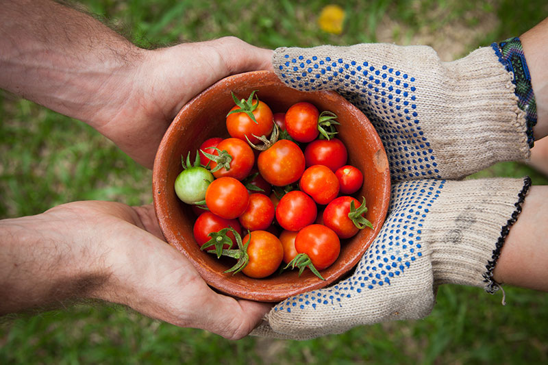

Fresh ProduceDelivered right to your door
straight from local farms.
Browse ProduceCheck Avaliability in your area
straight from local farms.
Connecting
Whatcom County
With local farmers.

Farm to Door was created to bridge the gap between you and the farmers in Whatcom County. Located in Lynden, we aim to provide you with the freshest produce and farmers with a direct customer base. Order fruits and vegetables when they are in season and have them delivered to your door within hours, or subscribe to produce of your choice and have it delivered to you regularly. We offer bulk purchases on some items too.
Are you sure?
This action cannot be undone.